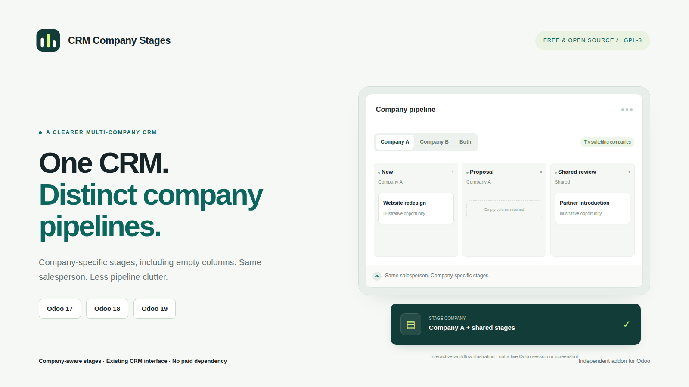
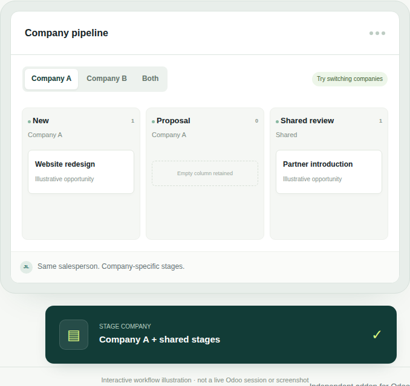

FREE AND OPEN SOURCE · LGPL-3
Give each company its own pipeline stages, even when the salesperson is the same. A focused extension to your existing CRM screens.
This package: Odoo 17.0 · CRM dependency only · No API key or subscription
Filter populated and empty stages by selected companies. Shared stages remain available, subject to sales-team restrictions.
Prevent opportunities from using another company's stage through normal create, update and import operations.
Keep standard CRM permissions and team restrictions. Bulk Won actions resolve suitable stages by company and team.
01 Select your working company in the standard company selector.
02 Open the stage column's gear menu, then choose Edit.
03 Set Company, or leave it empty for a shared stage. Team restrictions still apply.

Illustrated workflow, not a live Odoo screenshot. Actual interface layout varies by Odoo version.
Company selection: selecting A and B together shows both sets of stages. Select only A to hide B's stages. Shared stages are intentionally visible in either company.
Existing data: existing stages remain shared on fresh installation. No opportunities are moved or deleted. Incompatible stage or sales-team company changes are blocked; archived opportunities are checked too.
Scope: pipeline stage columns, not CRM tags. The addon extends CRM and does not add a separate application menu or grant additional permissions.
Version details: this 17.0 package uses the version's native stage structure: one optional sales team per stage. Use the matching package for your Odoo major version.
Hosting: Odoo.sh or self-hosted Odoo. Not standard Odoo Online. The addon depends on Community CRM; Enterprise/Studio combinations need staging validation.
Cost and privacy: the addon is free and adds no paid dependency, API service, telemetry or remote license check. Odoo licensing and hosting costs are separate.
Back up first and test in a disposable database. Each package includes 38 Odoo integration test methods; Odoo/PostgreSQL runtime tests have not been executed in this preparation environment. This presentation does not claim live certification.
Do not install alongside the previous Company Stages addon, or uninstall it just to rename the addon. A tested technical-name migration is required. An installation safeguard blocks accidental coexistence.
Place crm_company_stages in an addons path, restart Odoo, update the Apps list and install CRM Company Stages. Remove the default Apps search filter if necessary. English documentation, Turkish setup notes and a QA report are included. Community support has no promised response time.
LGPL-3.0-or-later · Independent third-party addon. Not an official Odoo product or endorsement. Odoo is a trademark of its respective owner.